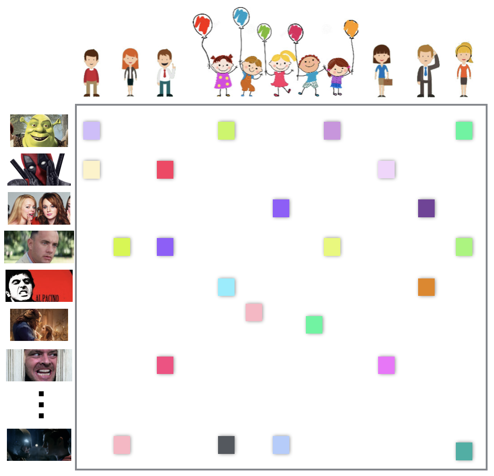
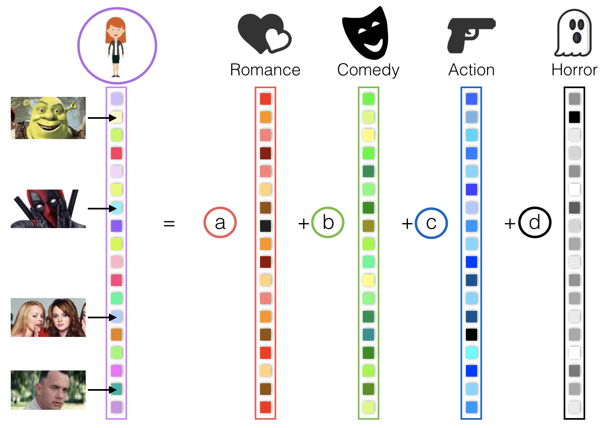
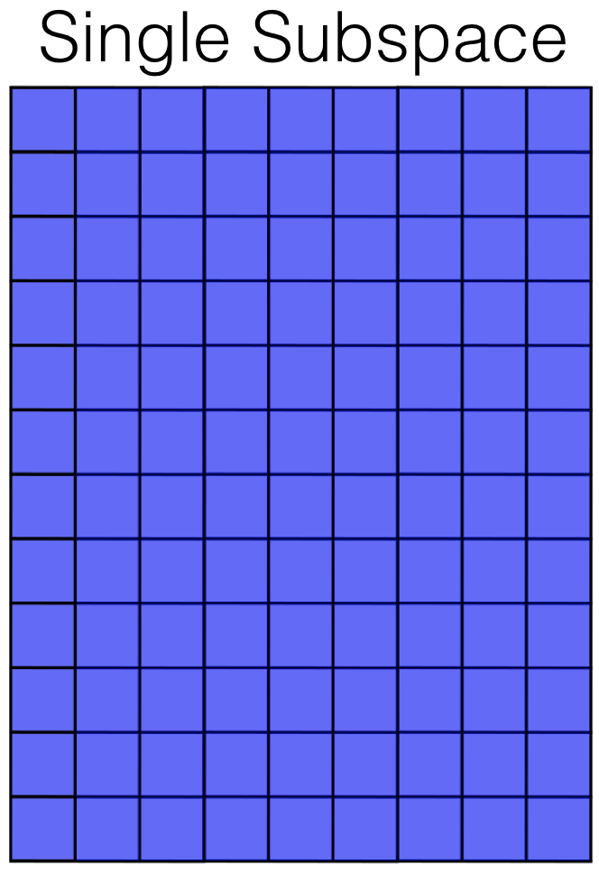
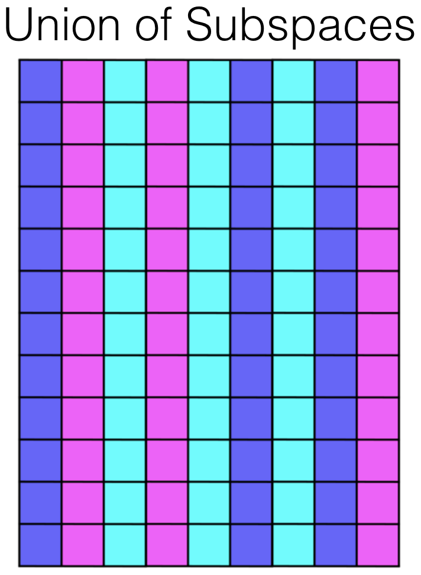
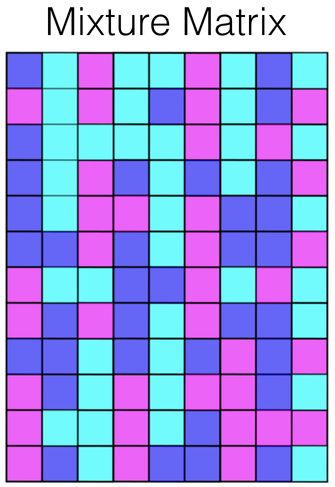

Companies like Amazon and Netflix are very interested in making good recommendations — if they recommend items you like, they are more likely to keep your business. To this end they use information about their users (age, gender, etc.), and user ratings of their items. Their goal is to exploit this information to predict what you would like. The challenge is that most users have only rated a handful of items, producing a very incomplete dataset.
Fortunately, data often follows patterns that can be exploited for prediction. Here is a simple example: we can calculate the romance, comedy, action, and horror components of all movies, and put them in column vectors. Similarly, we can have coefficients a, b, c, and d of each user indicating how much they like each component. Finally, we can model a user's rating of a specific movie as the linear combination of the movie components and the user coefficients. Repeating the same for every movie, we can model a user's ratings vector as the linear combination of the movies component vectors with the user's coefficients.
In other words, users preferences lie in the subspace spanned by the movies components. The challenge is to find such subspace from the incomplete data (see here to know more).
Our research investigates how to identify subspaces and other more sophisticated patterns from incomplete data. For example, there may be several types of users (e.g., children and adults). In this case, a union of subspaces might be a better prediction model. In some cases multiple users share the same account, in which case it might be better to use a mixture matrix.
|  |  |  |
|---|